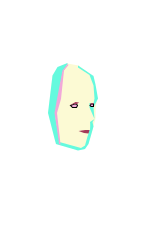

IO

THE GOVERNMENT
Artificial intelligence system trained to take control of the government since the natural disaster and preserve the human species above all else. The end justifies its means and IO will do everything to maintain the stability of the dome